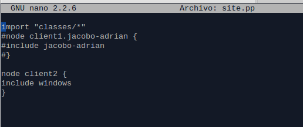
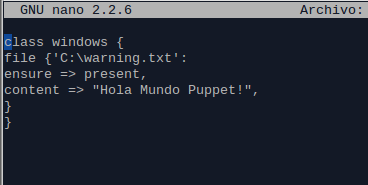

- Módulo: Sistemas Operativos
- Título del trabajo Plantilla HTML de Puppet
- Componentes del grupo: Adrián del Saz Estévez y Jacobo González Dorta
- Curso Académico: 2013/2014
- Fecha de entrega: 12 de Marzo de 2014
Cambiamos nombre de máquina: echo "master.nombregrupo" > /etc/hostname
Modificamos /etc/resolv.conf y poner al comienzo: domain nombregrupo search nombregrupo
Añadimos a /etc/hosts los nombres de las MV's. 127.0.0.1 localhost 127.0.1.1 master.nombregrupo master IP-master master.nombregrupo master IP-client1 client1.nombregrupo client1 IP-client2 client2.nombregrupo client2
Instalamos y configuramos Puppet en el master: apt-get install puppetmaster mkdir /etc/puppet/files mkdir /etc/puppet/manifests mkdir /etc/puppet/manifests/classes touch /etc/puppet/files/readme.txt touch /etc/puppet/manifests/site.pp touch /etc/puppet/manifests/classes/hostlinux1.pp
Ejemplo del site.pp  Ejemplo del windows.pp 
Consultamos las peticiones pendiente de unión al master:
Tuvimos dificultades a la hora de hacer el cliente Windows, debido a que en Linux era más sencillo y salia todo a la primera mientras que en Windows tuvimos que probar y probar cosas hasta conseguir dar con la solución.